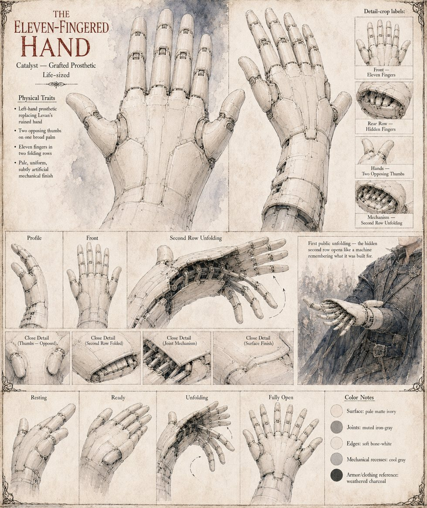

The Eleven-Fingered Hand
Catalyst, Case 1,153 · a grafted prosthetic left hand · two thumbs, eleven digits
The prosthetic that replaces Levan's ruined left hand, fitted by the clockmaker over three nights: no blood after the first hour, no fever after the second night, and by the third morning a hand lying pale and still on the pillow, unmistakably wrong in the way a correctly drawn diagram of a hand is wrong when you have only ever seen the real thing. It has two thumbs set opposite each other along one broad palm, and beneath them two rows of ordinary fingers: four in the row that shows, and five more folded flat beneath it, hinged along a second knuckle no natural hand possesses, the way a fan holds nine-tenths of itself in reserve until a wrist decides otherwise. Nobody who handles it can say what it is made of.
It sets compound fractures with a precision no natural hand could match, ties sutures too small for the physicians' own eyes to follow, and reaches into a wound at an angle no ordinary wrist could offer. Its hidden row unfolds fully for the first time in the six-hour surgery on Bagrat's arm, and again in the duel, when all five hidden fingers close over the guard of his sword like a hand closing over a key it has always known. Legend then does what the file declines to: the lower market calls it the Twelvefold Hand, then gold cast at Solan's anvil that cannot be burned; the court chronicles call it a lie told in metal; and a small shrine in a lower valley keeps a gilded wooden hand with too many fingers on a shelf behind its altar. The sheet draws it pale matte ivory with muted iron-grey joints, in panels showing the folded second row, the joint mechanism and the opposed thumbs.